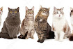
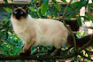
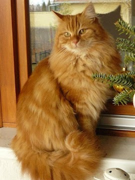
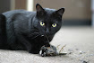
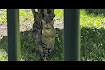

Adote um Gatinho 🐱
Gatos para Adoção

Luna
- Idade: 2 anos
- Personalidade: Calma e carinhosa
- Necessidades: Cuidados com pelagem longa

Thor
- Idade: 1 ano
- Personalidade: Brincalhão e energético
- Necessidades: Espaço para correr

Shadow
- Idade: 3 anos
- Personalidade: Independente e misterioso
- Necessidades: Ambiente tranquilo

Mimi
- Idade: 4 meses
- Personalidade: Curiosa e afetuosa
- Necessidades: Socialização
×